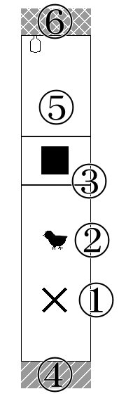
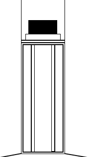

「視界を封じて、耳を澄ませて、手の先に集中して。 ――さて、それは本当に壁だろうか？」
※ 「壁の中の鼠」「石の中にいる」とは何ら関係ありません。インスピレーションはもらいました。
※ 「壁の中の鼠」「石の中にいる」とは何ら関係ありません。インスピレーションはもらいました。
氷守緋羽さまがシナリオの素材を作ってくださいました。ありがとうございます！
【壁の中にいる 素材】
シナリオの表示形式を一部変更しました。旧版はこちらに。
内容的な変更はほぼございません。
１：はじめに
このシナリオの時代、季節は特に指定しない。
舞台は狭く暗い・視界は探索中何も見えない(=≪目星≫は役に立たない)密室である。
戦闘は基本起きない、探索中心のシナリオである。
・プレイ人数：1～2名(推奨1名)
・プレイ時間：1時間ほど
・推奨技能：≪聞き耳≫
尚、全技能ロールに失敗したとしても、探索者の行動でクリア可能である。
２：KP向け情報(シナリオ背景)
探索者は運悪くツァトゥグアの狂信者たちに生贄として選ばれた。探索者が目を覚ました場所は、ツァトゥグアの祭殿の一部だ。無形の落とし子たちが周囲に大量にはりついており、光が一切さえぎられた空間、(体内にいるわけではないので消化はされない) 近くにはツァトゥグアが座り込んでいる。
ツァトゥグアや無形の落とし子たちは、連日の生贄のこともあり、基本探索者に害を与えない。その場から逃げようとしても追ってくることはないだろう――彼らに害さえ与えなければ。幸い、脱出に使える『門』は用意されていた。彼らからすれば探索者たちを逃がしたところで、次なる生贄はくるのだから。
このシナリオのクリア条件は、
３：主要NPC
【ツァトゥグア】
―― 今回は触り心地のいい壁役。比較的無害、好きな食べ物はとり肉(という今回限りの勝手な設定)
具体的な能力値はルルブP.220参照
正気度喪失：暗闇のため無しとする。少し不穏な空気を感じる程度
【無形の落とし子】
―― 今回は柔らかいようでかたい壁役。珍しく無害。何も囁いてないあたりオフの日なのかもしれない
具体的な能力値はルルブP.193参照
正気度喪失：暗闇のため無しとする。少し異様な空気を感じる程度
【小鳥】
―― 迷い込んでしまった小鳥。20cm位の大きさ。TnTn!
//STR=5
//CON=10
//SIZ=4
//POW=10
//DEX=10
HP7
この子に関しては、探索者の癒しになるようにちょこちょこと動かしてやってほしい。頬ずりや肩に乗ったりと、なかなか人懐っこい性格をしている。鳥の種類はとくに定めていない。
候補としては夜行性のヨタカ（鳴き声：ﾋﾟｮｨﾋﾟｮｲﾋﾟｮｲ･･･)がある。
４：導入
何気ない日常をおくっていたある日、探索者は何らかのきっかけがあり意識を失う。
（このきっかけは自由に設定してよい。異様な眠気に急に襲われ倒れてしまう、スーツ姿でサングラスをかけた男たちにフルボッコされて気絶、などなど。）
目を覚ますとそこは暗闇であり、周りに何があるのかは認識できない。ただ理解できない事態に、言い知れない不安が自分の中からせりあがってくるのがわかる。
身動ぎしようとしたところであなたは、その場所が異様に左右に狭いことに気付く。そう、まるでここが空間と空間のあいだにある、ほんの狭い隙間のように。
――――壁の中にいる。そんなフレーズがあなたの頭の中をよぎった。
身動ぎしようとしたところであなたは、その場所が異様に左右に狭いことに気付く。そう、まるでここが空間と空間のあいだにある、ほんの狭い隙間のように。
――――壁の中にいる。そんなフレーズがあなたの頭の中をよぎった。
・思いつかなかった時用にどうぞ
ex.「ふしぎなであい」
都会、アスファルトの上にどんぐりが一つ落ちている。これは探索者以外の目には見えていないらしい。
そのどんぐりの傍を白いウサギのような塊が通る。どんぐりは、この白い塊の落としたもののようである。白い塊は路地裏に消えていった。
不思議な力に誘われているかのように、探索者は白い塊を追って路地裏へと引き寄せられてしまう。路地裏に入ったところで意識は暗転する。なるほどトトロじゃねーの。
ex.「黒フードの影」
夜、帰宅途中。探索者は尾行されていることに気付く。
・振り返る or 振り返らない
振り返る→黒いフードをかぶった人影が佇んでいる。次の瞬間にはその人影は探索者の目前にまで移動している。
振り返らない→足音が近づいてくる。探索者は追いつかれ、追い抜かれる。黒いパーカーをかぶった人影が探索者の前に出る。人影は立ち止まり、こちらを振り向く。
探索者は足が地面に縫い付けられたかのように動けなくなる。人影がフードをぬぎ、フードの下が露になるが、探索者はそれが何なのかを確認する前に意識を闇に飲まれる。
５：探索
身体を動かそうとすれば、この空間が前後にひらけていることが分かる。人一人が通れるくらいの横幅、高さはあるようなので、移動はできそうだ。この空間に対する探索は、≪聞き耳≫に加え、まわりをぺたぺたと撫でまわしたり、手に伝わる感覚から材質などを調べることが可能だろう。
空間は以下見取り図のようになっている。（この図は探索者には公開しない）
①の場所にいる時点で探索者たちは全員⑥の方向を向いている。便宜上、①からみて⑥の方向を「前」、④の方向を「後ろ」とする。
◇ 見取り図
探索者が複数人の場合、しゃがんだ探索者を別の探索者がまたぐ形で順列を変えることは可能だ。
尚、≪登攀≫で壁を登ろうとする場合、壁を撫でて調べてみても指を引っ掛けられるような凹凸はない、かつ視覚情報が一切ない状態での登攀になるので自動失敗とする。
◇ 服装・所持品
服は着ている。意識を失う直前と同じ服装だ。・探索者が「ライター」他、火に関する道具を持っていた場合
確かに持っていたはずのそれが、いつの間にかなくなっている。
→
その道具が、ここに探索者を連れ去った「誰か」に奪われたことを確信する。
他の物は一切奪われていない、これだけ奪われているということから、探索者をここに連れてきた者には、明るいもの、もしくは火を使われたら不都合な「何か」があるのではないかと考える。
・火に関する道具以外の持ち物
身に着けていた持ち物は、相変わらず手元にあるようだ。
◇ 道具を使用した行動
・「携帯電話」「懐中電灯」など、明りになりそうな道具を使おうとする
不思議なことに、電源がつかない。
・「アナログ時計」
音がしない。秒針が止まっているようだ。
◇ この空間での探索行動
・視覚情報を使用する技能について≪目星≫、≪機械修理≫、≪製作≫などなど、視覚情報あってこその技能全般は自動失敗する。
▽ 空間の広さを調べる
・音を発生させて、それに対して≪聞き耳≫を行う
どこまでも広大で開けた空間で音を出したかのように、跳ね返っても来ず響きもしなかった。
→
横に壁らしきものがあるのに、反響がないのはおかしい。ここが超常的かつ異常な空間だということを本能的に感じとり恐怖する。
正気度ロール ＜0/1＞】
▽ 壁や床を調べる
・直接触れる
触るとつるりとしている。硬質的で、温度を感じない。
一瞬、その壁が動き出し、膨らみ、自身を呑み込むかのように錯覚するが、おそらく気のせいだ。
・壁や床に対して≪聞き耳≫成功
ごく小さな音がノイズのように聞こえる。それは一定の言葉を刻んでいるようだった。よくききとろうと耳を澄ませると、泡が囁くような、人間の物とは思えない不気味さ、不快かつ忌々しい発音で、言葉が聞こえた。それは決して音ではなく、言葉のはずなのに、あなたにはその言葉が何なのか分からなかった。
むかむかとするような感覚と、理解できないものへの恐れで胸が支配され、思わず壁から耳を離す。先ほどまで聞こえていた音がまだ耳鳴りのように聞こえる。
【正気度ロール ＜1/1d2＞】むかむかとするような感覚と、理解できないものへの恐れで胸が支配され、思わず壁から耳を離す。先ほどまで聞こえていた音がまだ耳鳴りのように聞こえる。
探索者がもう一度耳を付けて聴こうとした場合、部分的に「があ・・ん・・ゆふ」という言葉がきこえる。
・≪知識≫の半分、あるいは≪地質学≫、またはそれ以外の適切な技能に成功
その床、その壁が、自身にとって未知の材質であることを確信する。
・①最初の場所
導入シーン終了の時点で探索者はここにいる。自主的に振りたい技能があればKPに告げるよう伝えておく。探索者が前に進むか後ろに進むかを聞き、前なら②後ろなら④の項目の記述処理に移ること。また他の項目の処理が終わった後の場合も、前に進むか引き返すかをきいて探索者を移動させる。
・②小鳥
いくらか進んだところで探索者は何かばさばさという羽音と、ピヨィピヨィという鳴き声を近くで聞く。小型の鳥であることに察しが付くことだろう。この小鳥は探索者の後ろをついてくる。探索者が移動しようとしたところで≪聞き耳≫を求める。成功すればついてきていることに気付く。
小鳥は探索者の肩に乗り、自分の存在をアピールするようにふわふわとした身をこすりつけ、甘えるように鳴くだろう。愛らしい小鳥の動作が好ましい。多少あざとくてもよい。
・③台と四角い何か
小鳥と出会い、しばらく進んだところで探索者は小さな段差に転ぶだろう。そして顔面を衝撃が襲う。探索者は壁のようなところに顔を打ち付け耐久力ダメージ、1d2をうける。探索者が複数名の場合は最前を歩く探索者のみがダメージを受ける。尚、探索者が暗闇を這って進んでいた場合、これは適応されない。
☆小鳥の鳴き声で段差の警告という形をとるのも可。
探索者の顔を打ち付けた場所は探索者たちくらいの背の高さの台になっているようで、撫でまわすことで台の上に手のひらほどの大きさの四角いものがあることがわかる。触れると、まるで嫌なものをみてしまったような感覚に陥る。四角いもの自体はひんやりとした陶器のような冷たさを持っている。
※補足
この台は祭壇であり、四角いものは門の呪文を内に込めた箱である。
持ち上げる・手に取ろうとしたとき、小鳥がいると警告するようにけたたましく鳴く。それから探索者は腕にのしかかるような羽毛の感触と重みを感じるだろう。この箱を持つことは許さないというように、小鳥は箱の上に乗ってしまったようである、そのせいか箱は持ちあがらない。
その場を探索者が離れようとすると、小鳥はまたバサバサと羽音をさせる。どうやら箱の上からのいたようで、探索者についてくる。しかし、探索者がまた箱を取ろうとすれば、小鳥は箱の上に乗ってしまう。
この箱を探索者が手にするには、鳥を気絶させる、死亡状態にする、箱をあきらめたふりをして小鳥が箱の上を退いた時を狙うなど、鳥をどうにかする必要がある。
その辺の処理の仕方はお任せ。KPができると思ったらできてよし。
補足：
鳥の死亡処理…④でのフラグ回収または鳥との戦闘勝利。鳥との戦闘は、鳥は箱の上を不動であり、探索者に攻撃はしてこないため探索者の攻撃のダメージロールのみ処理する。
この四角いものを手にすると、コトリと音をさせて台が消える仕様になっている。台が消えたことに気づいた探索者は不可思議な現象に驚く、あるいは恐怖するだろう。
【正気度ロール ＜0/1＞】
また、手にした四角いものを調べると、非常に軽く、中が空洞になっていることが容易にわかる。軽く叩けば軽い音、木箱を叩いたような音がする。そして、くまなく触ると少し指がひっかけられるようにへこんでいる部分が発見できる。ここに指を引っ掛けることで箱は容易に開く。
台が消えたことでこの先の道(⑤)が開かれる。
台と箱の上には多少の空洞がある。すべてをスルーして跳び越えてもいい。その場合は≪跳躍≫に成功すること。
☆入手した箱に関して
この箱は『門』の魔術に関するものだ。探索者にはその箱がどんなものか、暗がりで詳しくは確かめようがないだろう。
（硬く冷たい黒色の箱で手のひらに乗る程度の大きさをしている。何が入っているかは箱を開けない限り、現代科学の結晶をもっても確認は不可能だろう）
・この場で開けた場合
箱の中に施された『門』が作動し、探索者は箱に吸い込まれる感覚の後、数秒間不可思議な世界にとばされてしまう。尚、そのときに手にしていた箱は跡形もなく消える。（この世界は地底世界クン・ヤンをイメージしている）
探索者の視界に広がるのは今までの闇とはがらりと変わった色と音のある世界だ。今まで目にしていなかった明るさに少しまぶしく思うかもしれない。ざあざあと雨音が聞こえる。周囲にあるのは鬱蒼とした草木、どうやら森のなかのようである。
（ここにある植物はどれも探索者が見たことのないものであり、さらに言えば現実には存在しうるはずのない植物である。それらの情報は探索者の技能ロール結果により適宜明かすのものとする）
空はオーロラめいた青白い光に照らされ、青い霧が濃く広がっている。激しい雨が探索者の身を強く打つ。その生々しく冷たく鈍い水の感覚が、この不可思議な世界が現実のものであることを探索者に告げる。
【正気度ロール ＜1/1d2＞】
そこで探索者の意識は暗転する。 → ６.その後へ
・捨てる場合
なんの問題もなく手放せる。投げるもしくは床に置くだけでいい。
・開けずに持ち帰ったその後に開ける
探索者は折りたたまれたメモが箱に入っているのを見つける。このメモを広げると緑のインクの小さな文字でびっしり埋められている。≪母国語≫に成功で、そこには呪文『門の創造』(ルルブP.289,290)に関する記述がされていることがわかり、1d3の正気度を消失する。また≪クトゥルフ神話≫技能を+2%する。この呪文を習得する場合2d6＋10週間を必要とする。
（尚、この正気度消失、神話技能加算、習得期間はKP次第で調整可）
・④ふわふわな壁
最初にいた場所から後ろへとしばらく突き進むと、探索者は前方から少し不穏な空気を感じ取る。さらに進めば、これ以上は進むことを遮る壁に接触する。壁の撫で心地は柔らかく、うっすらと毛が生えているようであたたかい。非常に触り心地はよく思える。そして明らかに床、左右の壁とは違う材質だと感じる。
刃物の場合を除き、この壁に衝撃を与えようとするとまるでトランポリンの上ではねたかのようにふわりと押し返される。その反動は柔らかな優しいものなので、転ぶなどしての床への衝撃ダメージはない。
≪聞き耳≫
成功・失敗判定共通結果 →特に何も聞こえない
小鳥がいた場合
壁に近づくと、小鳥は「ピョイピョイ」と何か不安げに鳴く。その鳴き声も一瞬のうちに、何かにさえぎられたようにして、消える。代わりに聞こえるのは何かがゴキンと折れる音。音からして硬いであろうそれを、音を起こしている主はものともせぬ力で、ボキン、ゴキンと折りつづけている。そこに紛れてペッチャ…ヌッチャ…と粘性のあるような水音がする。
このとき≪アイデア≫ロールを探索者に求める。
成功 →小鳥が『何か』によって残虐に殺され、その水音は小鳥を『何か』が食している音なのだと気づく。その場から早く去らなければという念に襲われる。
失敗 →探索者の頬に液体が飛び散ってくる。それが血であることは容易に推測できた。小鳥がおそらく『何か』に殺されたのではないかと探索者は理解した。
成功失敗にかかわらず、探索者はこのときこの場所で小鳥が死んだということを理解する。
【正気度ロール ＜0/1d2＞】
小鳥に名前を付けて呼んでいた場合、小鳥死亡時正気度ロールで減るSAN値を1ふやす。
しばらくして小鳥が食される音は聞こえなくなる。探索者が襲われたりなどの影響はないが、この奥にクリアに関する情報はないため、探索者が場を離れること・近づかないよう誘導することを勧める。
刃物で切りかかる・刺す場合
軟らかな壁を切り裂いた・刺した感触はせず、ただズプズプといった音が手元から聞こえることがわかるだろう。ここで探索者が刃物から手を離さなかった場合、刃物を握った腕ごと壁にめり込んでいく。それを感じた探索者は反射的にこのままでは危ないと腕を壁から引き抜こうとする。このとき、STR15との対抗ロールを行う。
成功の場合、探索者は何事もなく壁から腕を引きぬけるが、刃物は壁の中に残してきてしまったようである。失敗した場合、探索者は壁から無理やり腕を引きはがすことになり、ひどく熱い痛みを感じるだろう。刃物は腕の痛みで壁の中に残してきてしまった。引き抜いたところで耐久力を1d2減らし、以降手を使う技能の成功率を-20%する。
尚、対抗ロールの合否にかかわらず、己の身に迫った得体のしれないものに探索者は恐怖する。
【正気度ロール ＜1/1d3＞】
これ以降、壁は何の変動もしない。刃物を複数個所持していてもう一度刺すという探索者には、KPは警告をしつつも上記と同じ処理を。そのとき探索者が抵抗なく壁に飲み込まれるという選択をしたなら、容赦なく呑み込み、ツァトゥグアと対峙した場合の慈悲なき処理(ルルブP.220)を行う。要するにキャラロストである。
・⑤通路
台があった先の道に足を踏み出した探索者は、今までとは違ってぬるりとした感覚を床におぼえる。≪幸運≫失敗で探索者は転び、耐久力に1ダメージを受ける。匍匐前進の場合は幸運判定しない。再度、同じ場所の床を調べたり先に歩いたりしても異変はなく床は以前までの硬さを持っている。
探索者がここで≪アイデア≫ロールを希望した場合、成功時探索者は『自分の歩いている硬質な床は、実は柔らかくもなれるのではないか』という考えが浮かぶ。
（水溶き片栗粉のようなものだと考えるとわかりやすいかもしれない。性質は全く違い、床自身が自分の意思・判断をもって硬さが変わるということまでは、探索者にはわからないだろう。）
・⑥扉
探索者は硬い壁に突き当たる。そして取っ手のようなものが壁から突出していることに気付く。突出している部分を握ると、金属のように冷たくすこしざらざらとしていることがわかる。この取っ手のようなものは左右に少し回せる。回すとガチャガチャと音がする。触った手を嗅ぐと錆びた金属のような香りがする。
≪聞き耳≫ 耳を当てたときの音
成功失敗にかかわらず無音
≪聞き耳≫ ノックしたときの音
成功 →コンコンと軽い音がする。木の音のような気がする。≪知識≫または≪博物学≫成功で木をたたいた音だと確信する。ロール省略でも可
失敗 →コンコンと軽い音がする。材質までは分からない。
☆扉を開ける
ドアノブをひねりながら引くと開く。押しても開かない。
☆扉の向こう
青い光が差し込み、音がなだれ込む。探索者は急な光に目をつむるだろう。その時に認識するのは激しい雨音だ。それから薄らゆっくりと目を開けた探索者の視界には、鬱蒼とした草木が映ることだろう。どうやら森の中のようだ。空はオーロラめいた青白い光に照らされ、青い霧が濃く広がっている。（項目③の箱を開けた時と同じ場所である）
このとき小鳥がいれば、小鳥は雨の中、探索者の肩から空へと飛び立つ。また、この場所でなら視覚関係の技能が使える。扉の前から離れると手元は暗くなる。
扉から外へ出る、探索者の身を打つ水の感触は生々しい。扉から手を離した時点で扉は音をたててひとりでに閉まり、閉まりきった瞬間はじめからなかったかのように跡形もなく消え失せる。それを確認してしまった探索者は【正気度ロール ＜1/1d2＞】
もう暗闇の中へ戻ることはできない。空の色が一層明るくなり、オーロラのような波形がゆらゆらと不思議な動きをする。まるで海の揺らめきを見ているかのようだ。そのうちあまりの明るさに目をあけていられなくなる。 そこで探索者の意識は暗転する。 → ６.その後へ
６．その後・後日
次に目覚めるとそこは自室のベッドであり、探索者の服はぐっしょりと濡れている。（これが寝汗か、雨のせいかは明かさない）その後探索者の身にはとくに何もなく、探索者は日常生活に戻ることになる。 探索者としては、その出来事は悪い夢だったと思うほかないだろう。たとえあの生々しい感覚を思い出したとして、到底現実とは肯定しがたい体験だ。（探索中転んだときぶつけた場所がある場合、その部位が痛むが、探索者はベッドや壁にぶつけたのだと解釈するだろう）
箱が探索者の手元にある場合は、開けるかどうかきいて、開けた場合は上項目に書いた箱の処理をする。
７．クリア報酬
・最後までプレイした
１ｄ６の正気度回復
・箱を持ったまま生存脱出
１ｄ２の正気度回復
・鳥が生存したまま脱出
１ｄ４の正気度回復
・登場神話生物2種(ツァトゥグア・無形の落とし子)を見破る
１つ正解につき１ｄ２正気度回復。
尚、間違えた場合のペナルティはないが、理由のない回答（いわゆるカン）での正解は正気度１回復
理由としては 火に関するアイテムが奪われていた＝火が有効なこと、 壁の手触りから、 「うが・・・ん・・・」＝「うがあくとぅんゆふ」の推測、 門関連の呪文からの連想、 青い光景＝クン・ヤンイメージから、 などなど。神話生物につながるものが拾えていたらいい。
他、ＫＰが適宜適当と思われる報酬を追加・改変してください。
８．PLへの解説タイム
PLが解説を求めた場合には、「狂信者に拉致られて探索者はあそこにいた。きみが探索していた壁や床には無形の落とし子がびっしりと張り付いていて、あのモフった壁はツァトゥグアの腹だよ」と言ってあげてください。
正直これをぶっちゃけると、あの暗闇空間の謎感が失せます。探索者のほんの近くに狂気が存在していたことは知ることができますが。
それ以上の詳しい内容は「シナリオ読んでね」とでも言いましょう。
ぷらすあるふぁ
・アレンジの一例としては、最初の時点の前後向きを変えるなど。
・探索者が複数名なら、隠し扉要素などを付け加えていつの間にかひとり消えている演出もいいかもしれない。
・小鳥をかばってツァトゥグアに食べられる生きざまは尊敬するが真似したくない。
・ツァトゥグアつながりで、扉を出た先は韮崎という標識のアパートの扉の前だったとかで「もっとたべたい」などのシナリオにつなげても面白いかもしれない。
・探索中、⑥の扉付近で何らかの方法で光源となるものを発生させ、暗闇を照らし中を再探索することまでは考慮して作っていない。そうなれば視覚情報で正気度ロールが起きそうな気がする。特に火は…壁に触れようものなら……怖いぞ…
あとがき
短時間少人数でさっくりやれるシナリオが欲しくて作りました。目星使わない探索シナリオというのは、一度はやってみたかった変な試みです。見えない方がいいこともあるのよ。少しでも楽しんでいただければ幸いです。
ツァトゥグアとトトロは似ていると思います。小鳥の死を探索者が悲しんだ場合には、『ドッキリ』の看板を持ったツァトゥグアと笑顔の小鳥のツーショットを見せてあげてください。私も見たいです、そんな光景。
探索者がすっきりしない終わりなのは、ラヴ・クラフトの短話の雰囲気を意識してみた結果なのですが…それはつまりKPがほくそ笑む仕様なんだなとなんとなく思いました。書く側としては楽しかったので満足です。
ここまで読了、探索、KPお疲れ様でした。
▽2013/05/17 up
2013/06/18 誤っていた数値修正
2013/11/30 クリア報酬一部変更
2016/01/23 項目③の追記、修正
「WaKaMuRa」
https://jxsnwk.github.io/wakamura/